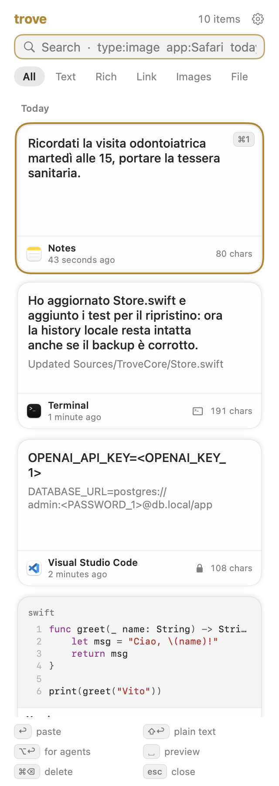
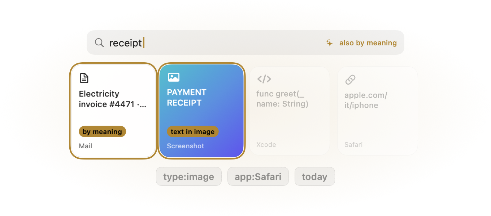
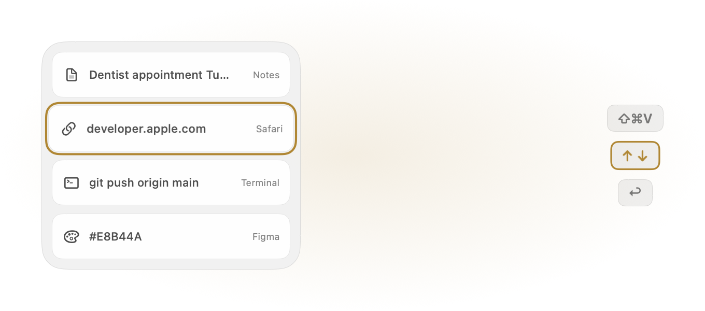
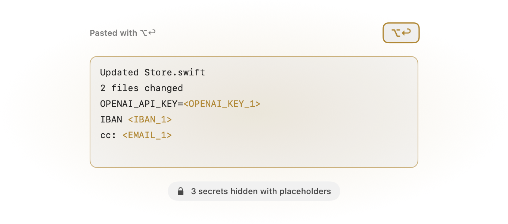
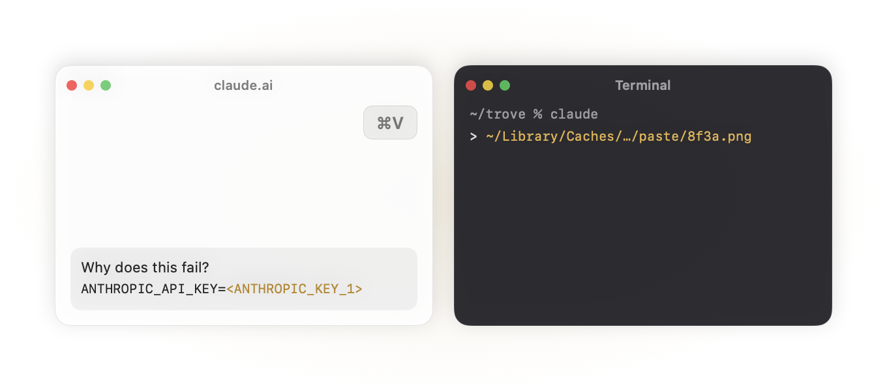

trove
Everything you copy, found again.
A clipboard history for macOS. Press ⇧⌘V over any app, find what you copied by words, by meaning or by the text inside an image, and press ↩ to paste it.


Find it the way you remember it
Trove keeps text, links, images, files and colors, with the app they came from. Search is typo-tolerant and understands meaning: “receipt” finds the invoice. Text inside screenshots is searchable too.
Filters narrow it down: type:image, app:Safari, today. All of it runs on your Mac, with Apple Intelligence when available.

Paste without the mouse
The panel slides in from the side you choose. Move with ↑ ↓, press ↩ and the clip lands in the app you were using.
⇧↩ pastes plain text, or the recognized text of an image. ⌘1…⌘9 paste the first results, Space shows a preview.

⌥↩ pastes the clean version
Copied from a terminal? The bullets, tree lines and padding go away.
API keys, passwords, cards, IBANs, tax codes, emails and phone numbers become placeholders like <OPENAI_KEY_1>, so you can share a log without sharing the secrets in it.

Safe in AI chats, handy in the terminal
When Trove pastes into ChatGPT, Claude, Perplexity or Gemini, secrets are masked on their own. Press ⌘V in those apps or their websites and Trove offers to hide what it recognizes.
In a terminal, a pasted image becomes a file path your coding agent can open.
What Trove does differently
It stays on your Mac
No account and no cloud. History lives in your Library folder; backup to Google Drive is optional.
Search that understands
By meaning and inside images, computed on-device.
Built for people who use AI
Secrets and personal data are hidden before they end up in a chat, in the browser too.
Free and open source
GPL-3.0 license. Read the code, file an issue, send a fix.
Install
- Download the latest Trove .dmg and drag Trove to Applications.
- Trove isn’t signed with an Apple Developer ID yet, so macOS blocks the first launch. Open it once, then click Open Anyway in System Settings › Privacy & Security, or run:
xattr -dr com.apple.quarantine /Applications/Trove.app - Allow Accessibility when asked: Trove needs it to paste into the app in front. A short tutorial walks you through the rest.